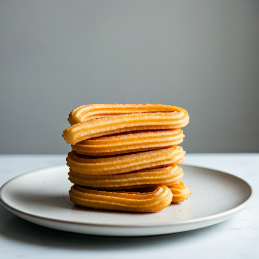
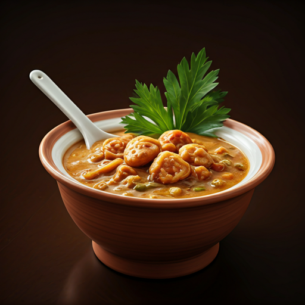
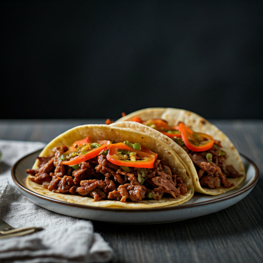

favorite Favorito
Churros Caseros
40 minCrujientes por fuera, suaves por dentro y bañados en azúcar y canela.
Ver detalles
Descubre los sabores ancestrales y la calidez del hogar mexicano en cada plato preparado con amor.
Un San Valentín inolvidable te espera con nosotros.
Traemos las recetas de nuestras abuelas desde el corazón de México hasta tu paladar. Ingredientes frescos, chiles ancestrales y el alma de nuestra tierra en cada bocado. Una experiencia culinaria que trasciende fronteras y conecta culturas a través del sabor.
Conoce más sobre nosotros arrow_forward


Crujientes por fuera, suaves por dentro y bañados en azúcar y canela.
Ver detalles
Un clásico irresistible. Suave, cremoso y con un caramelo líquido.
Ver detalles
Carne de cerdo marinada en achiote, servida con piña y cilantro.
Ver detallesTe esperamos en el corazón de la ciudad para compartir momentos inolvidables.

Llámanos
+34 900 123 456
Escríbenos
hola@saboresdecasa.com
Suscríbete a nuestro boletín para recibir una invitación exclusiva a nuestra pre-apertura y descuentos especiales.